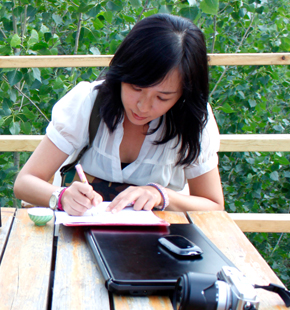
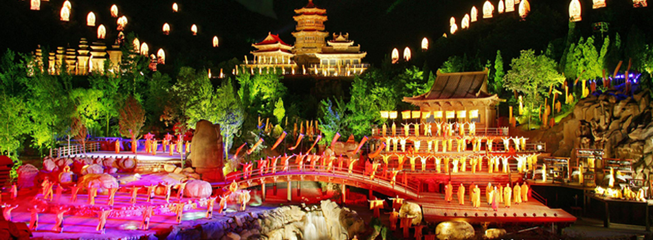
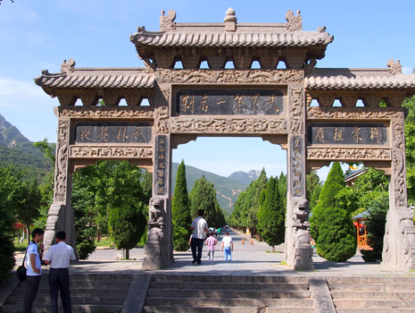
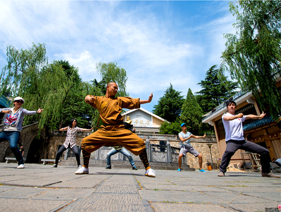
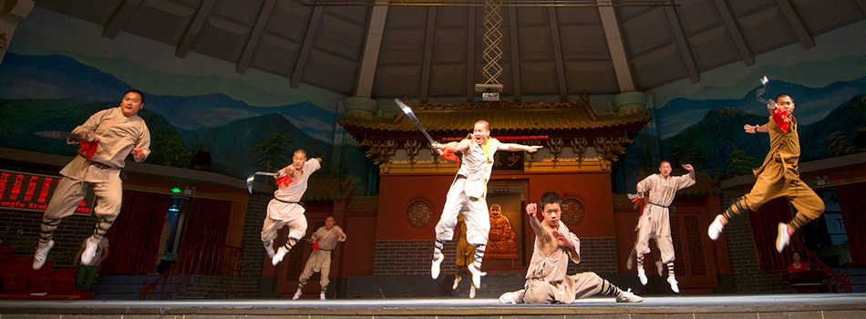

少林龍門 河南驚喜連連
在來之前，對河南最大的印象是少林、龍門石窟，偏向歷史文化的東西，來了以後發現龍門石窟比想像中壯觀，少林寺雖然在清代已被軍閥燒毀，近代恢復重建的模樣以及少林武功，在他們的發展之下也沒讓我失望，尤其將武術與音樂劇結合，對我來說挺有新鮮感的。除了這些文化點，河南山景峻險壯麗，讓人相當難忘，豫菜更是好吃，相當符合台灣人口味。
禪宗少林(音樂)
在戶外峽谷中實境演出的「禪宗少林•音樂大典」，以大自然的溪水樹林為景，結合高超的聲光效果下，表現少林禪宗、武術的意境，知名製作團隊包含像是奧斯卡原創音樂獎的譚盾的音樂，成為少林另一個文化巨作。

少林寺
經常出現在小說、電影裏頭的少林寺，是許多人嚮往的旅遊地之一，在這裡不但可欣賞到精采的武術表演，還可瞻仰名揚天下的第一古剎，走在景區其中還能欣賞四周蒼翠雄偉的嵩山景致，現代少林就是這麼禪意、武術共存。
 
武術表演
過去少林武術的出現，其實只是因為打坐太久需要活絡筋骨，接著發揚出許多技法，曾因武僧搭救過皇帝而名揚天下，後世以電影小說來傳達功夫的傳奇，對現代人來說，少林武功除了能強身健體之外，也成為一門表演藝術。
